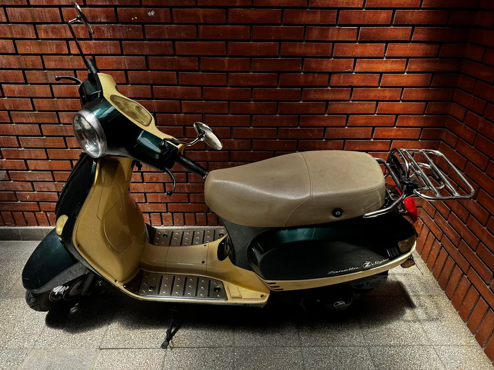
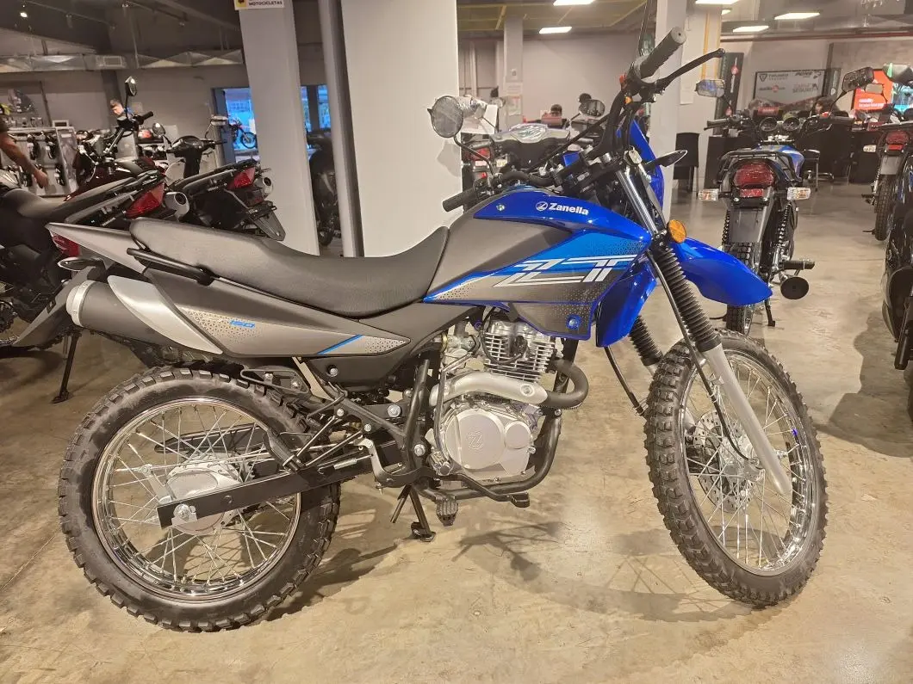
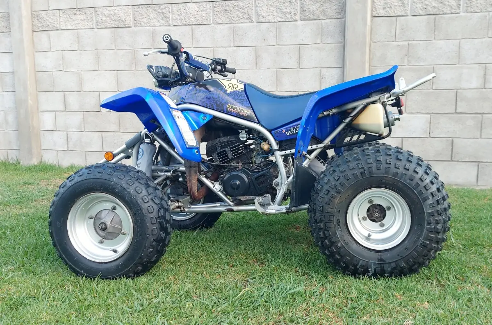

Moto Service Villa Adelina · Zona Norte
Somos un taller de motos ubicado en Villa Adelina, dedicado al mantenimiento, reparación y servicio integral de motocicletas.
Realizamos service de motos, mecánica integral, reparación de motores, carburación y puesta a punto, electricidad, transmisión, frenos, suspensión y mantenimiento preventivo.
También contamos con servicios de lubricentro, rectificación de motores y rectificación de tapas de cilindro, además de auxilio y traslado de motos.
Servicios de taller de motos
- Service completo de motos
- Mecánica integral de motocicletas
- Lubricentro y mantenimiento
- Carburación y puesta a punto
- Reparación de motores
- Rectificación de motores
- Rectificación de tapas de cilindro
- Electricidad y sistemas de encendido
- Frenos y suspensión
- Transmisión y embrague
- Diagnóstico y reparación de fallas
- Auxilio y traslado de motos
Rectificación de motores y tapas de cilindro
Realizamos trabajos de rectificación de motores y tapas de cilindro para motocicletas, con revisión y reparación de los componentes que correspondan según cada caso.
Auxilio y traslado de motos en Zona Norte
Brindamos auxilio y traslado de motos ante averías, inconvenientes mecánicos o cuando la motocicleta necesita ser trasladada al taller para su revisión y reparación.
Atendemos consultas de Villa Adelina y distintas localidades de Zona Norte.
Zona de atención
Estamos en Villa Adelina, Buenos Aires, y atendemos consultas de clientes de San Isidro, Martínez, Olivos, Vicente López, San Fernando, Tigre, San Martín, Boulogne y localidades de Zona Norte.
Dirección: Pedernera 1824, Villa Adelina, Buenos Aires.
Fotos de motos y trabajos







Contacto
Consultanos por service, reparación, mecánica, rectificación, mantenimiento o auxilio de motos.